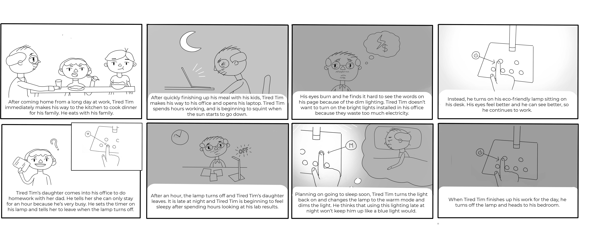

The goal of this project was to examine an interface and three users to step into their shoes and understand their experiences. I then created two personas and a storyboard based on my findings.
This interface is a lamp that provides light and several customizable features. The base of the lamp offers (on the top row of buttons starting from the left): power, light modes, (on the bottom row of buttons starting from the left): dimmer light, a 1 hour timer, a 2 hour timer, brighter light, (on the back of the base): USB portals for charging another device. These buttons are flat on the base of the lamp and light up when the lamp is on. The lamp is adjustable at two joints: one where the body connects to the base, and one where the light connects to the body.
I examined the actions of three users to gain a better understanding of their experience when using the lamp's interface.
User 1 already has a light on before (and while) using the lamp. After sitting down at the desk, User 1 immediately presses the power button after looking down at the button panel. Unlike other users, he does not make any adjustments to the position of the lamp or touch any of the other buttons other than the power button. After using the lamp to do schoolwork, User 1 looks down at the button panel and presses the power button.
User 2 already has a light on before (and while) using the lamp. After sitting down at the desk, User 2 looks at the button panel for a few seconds before selecting the power button. User 2 presses the brighter light button several times before pressing the dimmer light button, bringing the intensity of the light to a few settings higher than it originally was. User 2 then takes a few seconds to look at the buttons again before pressing the mode button once. After seeing the change in lighting mode, User 2 presses the mode button several times in quick succession, shifting through all the modes around 4 times until stopping at the original mode.
Unlike Users 1 and 2, User 3 does not have any lights on before using the lamp. After walking over to the desk, User 3 leans down extremely close to the lamp base and presses the power button. User 3 then adjusts the lamp light’s angle by moving the top joint. After User 3 spends a short amount of time looking at her laptop, she presses the 1H timer, then the 2H timer, then the 1H timer again. User 3 then presses the mode button several times, but much slower and fewer times when compared to User 2, and leaves the light on the warm mode. User 3 works on her laptop until the timer runs out.
After observing the users, I asked a few questions about their experiences.
User 1 uses the lamp at night to do homework on paper (around three times a week). User 1 would rate this lamp at an 8. He doesn’t use any buttons other than the power button and thinks that the lamp could have more feature than it currently does. User 1 likes that there is no sound when any of the buttons are pressed and thinks that the lamp responds quickly when buttons are pressed (when compared to other lamps, which usually make a sound when they’re turned on and may take more time to react). He likes the layout of the lamp because the two main buttons (power and mode) are placed above the other buttons. When using the lamp, User 1 feels annoyed and unexcited because he needs to do homework.
When User 1 first used the lamp, he played around with the settings until he was satisfied with the results. He also had to adjust settings often because it was placed in a common study room and others would change the settings. User 1 found it bothersome to have to constantly adjust the lamp settings because other people used it as well. Now, he only uses the power button because he brought the lamp home and his preferred settings from the last time he used the lamp remain unchanged. Prior to using this lamp this semester at home, User 1 did not have a lamp in his room.
User 2 thinks he would use the lamp when it is dark outside to do work on his computer so he can see clearly. He would rate this lamp at an 8 or 9 because it is simple to use (he thinks that the power button, timer buttons, and intensity adjustment buttons have easily recognizable symbols). User 2 likes the layout of the buttons because it looks nice and the main buttons are placed above the other functions. Before using the lamp, User 2 has the impression that the lamp is modern and fancy. He also thinks it would be quite expensive. While using the lamp, User 2 has the impression that the lamp responds well to simple touch. Because he would use the lamp to do work, User 2 thinks he would feel reluctant and tired when using the lamp.
User 2 thinks the lamp has an on/off function, a function to change the color of the light, two functions to set timers, and a function to change the brightness of the light.
User 3 thinks she would use this lamp in the common study area to do homework when it is dark. User 3 would rate this lamp at a 8 or 9 because the design looks nice and the lamp can be adjusted in a variety of ways. User 3 thinks that the timer function isn’t very obvious but likes the simple, straightforward symbols like the power, mode, and brightness adjustment. User 3 thinks the lamp controls respond to light touch well, but is worried that the buttons might break or malfunction in the future if she presses them too roughly. User 3 likes the balanced layout of the buttons but thinks that the buttons should not light up when the lamp is on because it makes it hard to see the symbols and the lights don’t give much information (other than the lights behind the timer buttons that indicate activation of a timer). User 3 feels excited when using the lamp because she thinks it looks very technological, which she likes.
User 3 wanted to see what all the buttons did because she was unfamiliar with them and switched through the modes several times to make sure she didn’t miss any of the modes. User 3 would likely use the warm mode light because it’s easier on the eyes at night. User 3 thinks she would potentially use the timer to time her studying or before she goes to sleep in her bed, but she thinks it would be a little impractical.
I created two personas based on the 3 users I interviewed.
I created a storyboard of Tired Tim's use of the lamp on a typical work night.
 Through this project, I learned that user observation and interviews are important sources to discover the good and bad qualities
of an interface. Users feedback is extremely important because as UI/UX designers, we are creating products for the users.
I also learned that personas and corresponding empathy maps or storyboards are great tools for considering the user experience for specific
kinds of users and to determine who I am designing for.